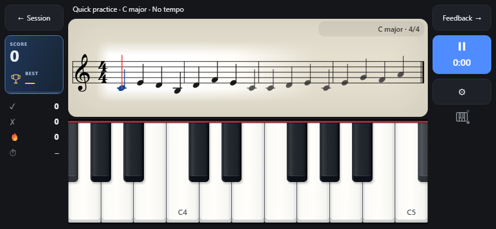

SPino
Your piano notebook
Make room for music. Build a routine, keep your scores at hand and see your practice grow. At the piano or on the go, SPino keeps your next step simple.
Beta · 6.0.0-beta.1 (40)
Development preview: iOS, Core MIDI, reminders, light/dark themes and a guided tour.
iOS Simulator for MacThe iOS download runs in Xcode Simulator on a Mac. An iPhone/iPad installation and TestFlight are not available yet: Apple Developer signing is required.
SHA-256
A place for every kind of practice
Read at your own pace
Fresh sight-reading and technique exercises, one hand or both. Choose a tempo or practise without a clock. Rhythm and range follow your pianist level.
Warm up before you play
An optional, rotating set of Hanon exercises at the start of piano practice, with step-by-step hand-position illustrations.
Connect your piano
USB or Bluetooth MIDI checks supported note responses, including chords. An acoustic piano works too, with manual practice tracking.
Routines that fit your day
Create, reorder and time your practice blocks. Schedule a saved routine from the calendar and choose your tempo when you practise.
Keep your scores close
Put pieces on your music stand, import PDFs and browse the score catalogue. Annotate PDFs; use editable zoom and note-linked fingering in MusicXML scores.
A quick musical challenge
One tap opens on-screen practice: no tempo, one hand and a random clef and keyboard position. Earn points for accuracy and speed, and beat your personal best.
Find your pulse
A dedicated free-practice workspace with audio, visual or combined metronome signals, tempo and volume faders, tap tempo and favourite tempos.
See your habit grow
Weekly practice streaks, goal streaks and the last four weeks compared with your current weekly goal. Saved sessions keep your practice time and reflections.
A look inside SPino
Development preview with synthetic notebooks in English, Spanish and Catalan. Screenshots illustrate the evolving beta; they are not a capture of the stable 5.2.3 store release.



Your notebook, your choice
No app account, ads or SPino-operated backend. Your notebook stays on your device. Optional backup and sync use a file you choose through your device’s file provider; a provider such as Google Drive may require its own account.
Privacy policySpino Arcade · Play lab
A musical game born from Spino: Smart Piano Notebook. Read moving notes, keep the rhythm and build streaks, with sampled instruments and gentle progression.